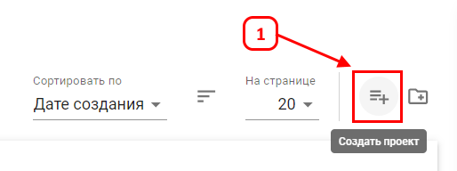
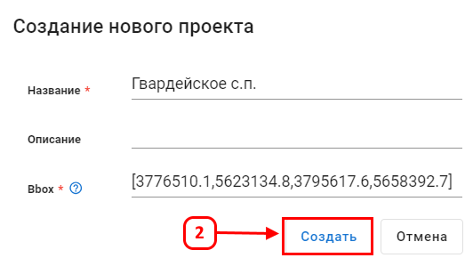

Создание проекта
Проект представляет собой рабочее пространство для публикации данных, хранящихся в библиотеках или наборах данных.
Для создания проекта выполните следующие шаги:
- Откройте раздел Управление данными.
- Во вкладке Проекты нажмите Создать проект (1).

- В открывшемся окне введите Название проекта (обязательное поле).
- При необходимости введите Описание.
- В поле Bbox введите координаты области проекта в EPSG:3857. Формат:
[Xmin,Ymin,Xmax,Ymax].
- Определите границы области в QGIS: выделите масштабом интересующую зону, скопируйте координаты углов в метрах (EPSG:3857).
- Пример:
[4336548,5630738,4337222,5632892]

- Нажмите Создать (2), чтобы сохранить проект.
Созданный проект появится в списке в выбранной папке. Отображение карты при открытии будет осуществляться по координатам, указанным в bbox.